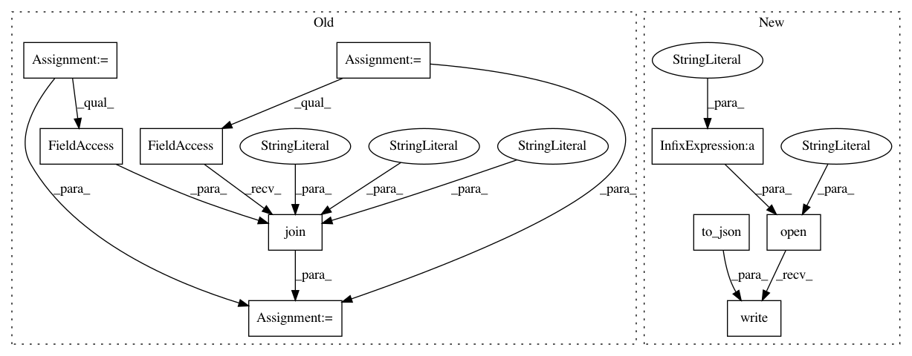

1a96a74faab8df6d90d6101340d54819c9a9cac3,snntoolbox/models/mnist_mlp.py,,,#,25
Before Change
plot_history(history)
filename = "{:2.2f}".format(score[1] * 100)
path = os.path.join(snntoolbox._dir, "data", "mnist", "mlp", filename)
save_model(model, path, "ann_"+filename)
After Change
plot_history(history)
filename = "{:2.2f}".format(score[1] * 100)
open(filename + ".json", "w").write(model.to_json())
model.save_weights(filename + ".h5", overwrite=True)
In pattern: SUPERPATTERN
Frequency: 3
Non-data size: 10
Instances
Project Name: NeuromorphicProcessorProject/snn_toolbox
Commit Name: 1a96a74faab8df6d90d6101340d54819c9a9cac3
Time: 2016-06-23
Author: bodo.rueckauer@gmail.com
File Name: snntoolbox/models/mnist_mlp.py
Class Name:
Method Name:
Project Name: NeuromorphicProcessorProject/snn_toolbox
Commit Name: 8acbc0715dfb4059ce73ddc988a07b9c401fdb19
Time: 2016-06-14
Author: bodo.rueckauer@gmail.com
File Name: snntoolbox/models/cifar10_cnn.py
Class Name:
Method Name:
Project Name: NeuromorphicProcessorProject/snn_toolbox
Commit Name: 1a96a74faab8df6d90d6101340d54819c9a9cac3
Time: 2016-06-23
Author: bodo.rueckauer@gmail.com
File Name: snntoolbox/models/cifar10_mlp.py
Class Name:
Method Name: